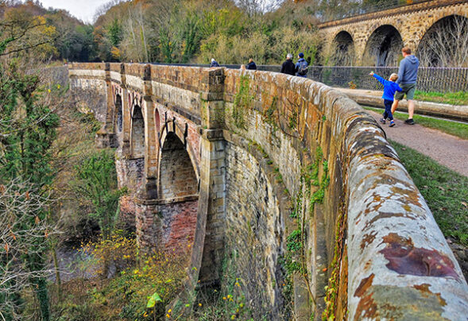
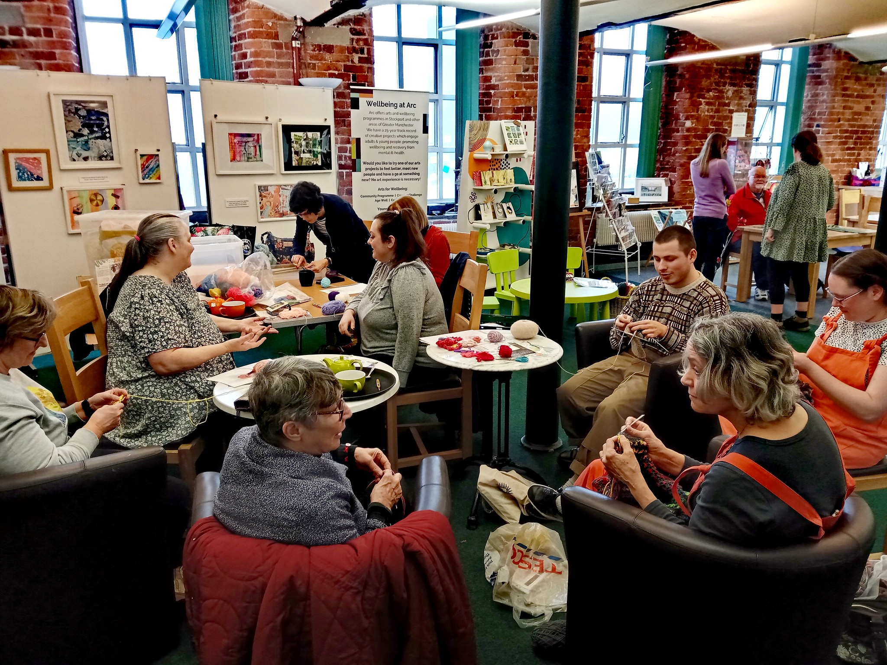

Stockport Town Centre
You don't have to stray too far from home to find places to visit and things to do. The town centre in Stockport has all sorts of sights to see, even if you're on a budget and just want to go for a wander
From the iconic indoor market, to the bustling Merseyway shopping centre, to the historic underbanks full of bakeries, bars, and boutiques.
Find out more...
Museums of Stockport
Stockport is full to the brim with fantastic museums and art galleries, with almost of all of them being completely free.
Just in the town centre you have the Stockport Museum, the War Memorial Art Gallery, and the Staircase House.
Find out more...Parks and Nature
Stockport is the ideal town for someone who finds the busy atmosphere of Manchester to be a bit much. There are a number of parks and green areas in the town centre, and even more if you're up for a bit of a walk.
With Vernon Park and Woodbank Park right in the centre, and Bramhall Park and Reddish Vale just around the corner, you'll never be wanting for a bit of nature.
Find out more...Nearby Areas
Stockport is surrounded by a number of lovely areas in their own right, especially if what you're looking for is something a little more quiet and simple.
To the west you have Cheadle and Gatley, south is Bramhall and Hazel Grove, north has the Heatons and Reddish Vale, and to the east you have Marple and the Peaks beyond.
Find out more... The Peaks
The Peak District might be a little ways out from Stockport, but with train access you're only a couple of stops away from one of the most stunning locations in the country.
Whether you're looking to head out to Hayfield for a hike up Kinder Scout (the highest point in England), or a train to Edale to head up Mam Tor. There are lots of easy ways to get out into the Peaks from Stockport.
Find out more...Groups and Events
If you're looking for a bit more socialisation or something to keep you busy, you're in luck!
Stockport is the centre of all the action. Art groups, knitting socials, and lots of courses and events for whatever you're looking for.
Find out more... 